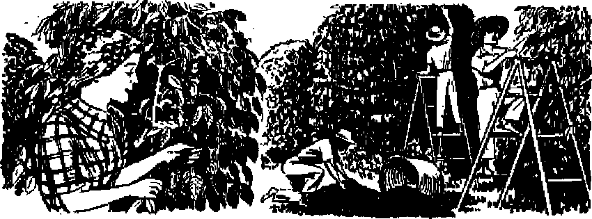

What is the Klan’s origin ? Its history ? Its modern aim ?
Paddy revisits his homeland and meets Jehovah’s witnesses
How they seek to hold their congregations
THE MISSION OF THIS JOURNAL
News sources tliat are able to keep you awoke to tha vital Issues of our timet murt be unfettered by censorship and selfish interests. “AwakeI” has no fetters. It recognizes facts, faces facts, Is free to publish facts. It is not bound by political ambitions or obligations; it is unhampered by advertisers whose toes must not be trodden enj it is unprejudiced by traditional creeds. This Journal keeps itself fred that it may speak freely to you. But it does not abuse its freedom* It maintains integrity to truth.
“Awake ?’ uses the regular news channels but is not dependent cn them. Its own correspondents are on all co fitments, in scores of nations* From the four comen of the earth their uncen sored* a a* the* scenes reports come to you through these columns. This joumaTs viewpoint is not narrow, but is international. It is read in many nations, rn many languages, by persons of all ages. Through its pages many fields of knowledge pass in review—government, commerce, reiigicn, history, geography* science, social conditions, natural wonders—wry, its cover* age is aa broad as the earth and as high as the heavens,
“Awake!” pledges itself to righteous principles, to exposing hidden foes and subtle dangers, to championing freedom for all, to comforting mourners and strengthening those disheartened by the failures of a delinquent world, reflecting sure hope for the establishment of a right* eous New World.
Get acquainted with “Awake;” Keep awake by reading “Awake!”
PUBLISHED 0.EH1 MONTHLY BT WATCHTOim BLBL3 AND THACT SOCIETY, INC,
117 Adams Street
NT, H, KNOB!, JWjidfnr cvnta a copy
H«aH>n*«> *tK«ld bt h* tn sHev ta F<r trj tn wltk u rairMtN
«■'« drUf«T of mowr. ac ictrpitd «t
D*» cMttrtt* vbcra no tj k-r«.teC, tj in'errttlociJ mowr ctmt «dj, rrtw it drtereM $MH>trtes m bar (UWl la J*a' ewToej ft npntlM (wit* rwwwd bluk> ia ant It JwT 1HJQ b*lMt IBOfidpUal uprM
Brooklyn 1, N. V , L’. S. A. Grint Serrat, AfrcrfFotv Ono dollar ■ yaar
Cbup «f Vtan REt (a «w nQw VI
within mj«Uu fitnJ rxr elf
M urtt u M» *OdlV*.
4ffzr» Yii’ly Xita
Aatrfci, U.S., 117 Alim St„ BrwUra I. V T. $1
Airtralh. ’1 BwW<c<J Rd.. EifrithfeH. N S W. (i Umm*. 40 Ir»t5 a»»., I’wraa 5. 0aU.4» }L It Crivrti Tantt, LodIju, K 9 St
St** Afrtta, <33 Batra €<p* kn fit
MtnS at Meeal'ClMi JMtUr tl BnxXJX N. I., An <f M»rCS 8. HT> rmiad io U. M.
CONTENTS
The Ku Klux Klan—Symptom cf Fear Why Ku Klux KJac Was Formed Methods of Origins) Klan Modi-ra Ku Khix Klan Recent Klan Outrages iir.c
Restraining Measures
Free Worship in Ireland
Blind Fear
Constitutional Guarantees
Water^Walkers of tbo Deep Being a Good Provider for a
Pair of Platypuses
3
4
5
6
7
9
11
12
13
15
Taking the Fight Out of Flowers
Priest Leads Mob Against Christians
Christendom's Religions Sow and Reap
WhstV < nukingf
Pird Ttat Slick to Your Ribs? A S'.ury Hard to Swallow Mert Brazilian Royalty, King Coffee “Thy Word Is Truth” Children Witnesses
A New Dominion?
5jSj 13 Ei
Watching the World 20
^“Now it is high time to awake.—Ramans 13:11 9j
Volume XXX
Brooklyn, N, V., December 8, 1948
Number 23
The Ku Klux Klan-—Symptom of Fear
ONE malady afflicting the world today is fear, even as Jesus foretold. (Luke 21:26) The Ku Klux Klan is a symptom, like a surface sore, revealing the presence of the plague. The Klan was conceived in fear, raised by terror, and now breaks forth in chronic malignancy portending the cancer fatal to human accord. It is but the exterior manifestation, one of many surface boils erupted by the virulent fever within. As the American variety of age-old illness, the Klan deserves analysis because of its threat to corrupt the constitutional safeguards erected to quarantine the United States from Europe’s consuming hatreds.
Examination of how the Klan was bred takes us back to the Old South, birthplace of the Klan during that era, doubtless the most terrible in American history, the Civil War and Reconstruction years, 1861-77. State’s Rights, specifically the right to secede, was the nominal issue upon which the Civil War.was fought. But destruction of Negro slavery, particularly after the Emancipation Proclamation in 1863, clothed the Northern cause in the A
garb of a cru-sade-
Perhaps many
best to leave the Jb hates which
try buried with
Confederate dead who spilled each others’ lifeblood for antithetical principles. But hate itself is the backdrop before which the Klan played its part. Hate has outlived all its victims. Turn then the pages of history back to December, 1865. The South, Virginia to Texas, had been since April a stricken, defeated land. Six young Confederate veterans are seated around a table discussing the generally doleful outlook. They, like most of their out-of-work fellow townsmen of Pulaski, Tennessee, decided to liven up the Christmas season, and suggested a club. The name “Kuklos” derived from the Greek word for “circle” was suggested, which they decided to prdnounce “Ku Klux”. (This was later thought to suggest the rattling of bones.) Another called out: “Add Klan.” Thus as a social club to relieve boredom and unemployment the Ku Klux Klan was born.
The founders adopted the use of robes or sheets, hideous masks, which the initiates provided for themselves as fancy dictated, and formed a code of signals by whistle, with which each was also pro-vided. Extreme r f t > secrecy was en-* / /FXt joined at the
J. / y r. meetings, guard-fa ed by sheeted sen-
'i w B tries in an old de-
Hi __ serted house near
- Pulaski. Curios-
tty, then fear, was aroused, e&-penally among the superstitious Negro population. Then, in 1867, an embittered Congress threw the inflammable Reconstruction Acts upon the Southern embers of war. Id the crucible that resulted, the Ku KJux Klan was forged as a sword, for the creation of which the North must bear a measure of the blame.
Two years before, Lincoln, champion of freedom and advocate of reasonable rehabilitation measures, had been slain by a priest-inspired fanatic. Beneath the statue of Abraham Lincoln as a statesman, Andrew Johnson provoked the ire of Congress by stubbornly insisting upon carrying out Lincoln's policies; which brought on impeachment proceedings on himself. A radical Congress, led by such monsters as Thaddeus Stevens, took dver reconstruction. These acts of Congress disfranchised all but renegade Southern whites called “scalawags”, and invited “carpetbag” rule by low Northern immigrants, said to carry all their belongings in a “carpetbag”. A virtual reign of terror ensued.
In that year, General Nathan Bedford Forest, wily officer of the Confederacy who had so troubled General W. T. Sherman of the Union that he had offered $50,000 (or promotion in case of an officer) for his capture “dead or alive”, was persuaded to organize the Klan to meet this threat to Africanize the South. The weird names of the officials, the Grand Wizard and his Ten Genii, an almost autocratic ruler of “the invisible empire”, as it was called; the Grand Dragon and his Eight Hydras, each of which ruled over a “realm”, a division co terminus with a state; the Grand Titan and his Six Furies; the Grand Cyclops and his Two Nighthawks, actually followed a highly organized military pattern.
The condition which this secret and highly trained organization sought to rectify is described by the impartial Encyclopedia Americana:
In several states negroes filled the office of lieutenant-governor, secretary of state, superintendent of education, and other important offices. In some instances they even sat upon the benches of the higher courts. They occupied seats in the legislature of all the Southern States, that of Mississippi in 1871 having as many aa 55 colored members. A considerable portion of these were ignorant, some of whom were unable to read or write and all of whom were the pliant dupes of unscrupulous Northern men. With the State and local governments controlled by ignorant' negroes and designing white men, an era of extravagance, misrule and corruption set in which amounted in some instances to outright robbery and plunder.
It is seldom made clear in history books that three-fourths of the South’s white population, which was rated in all at about million at the outbreak of the Civil War . (Negro slave population about million with a few thousand “free Negroes”), never owned any slaves; that the black race was not intrinsically any better than the white, since a number of slave-holding Negroes resided in the South; that about 60,000 of the families owning slaves owned only a single slave each (whose possession, of course, would not have induced them to fight a war to retain); that the large and profitable slave-holdings of 100 to 2,500 were limited to 2,000 prominent Southern families, who dominated the political as well as the economic aspect of Southern life.
As is usual, of course, the poorest people, having the least stake in the war, suffered the greatest. Furthermore, one historian of the day, Chiniquy, quotes Abraham Lincoln as saying that foremost among the agitators for war were Catholic priests, acting on instruction from Rome with the intent of destroying the hated American republic. The pope was said to be the first to recognize the Confederate States of America, while a Papal army under Maximilian in Mexico was poised to aid the Confederacy.
(Chiniquy's Fifty Years in the Church of Rome) Now, after suffering a devastating defeat while supporting what they considered to be their rights, the South was subjected to as many as twelve years of humiliating "punishment” through the misrule of their former slaves, as well as suffering robbery and violence from evil men, who "like scum, rose to the surface in the great upheaval”.
How could the disfranchised white stop such a destructive fury? The Ku Klux Klan, necessarily secret in operation (in Tennessee under the infamous Governor Brownlow, it became a hanging offense to be known as connected), seemed the weapon forged for the terrible chaos. Said one writer, the Ku Klux Klan "took the law into their own hands and began to attempt by intimidation what they were not allowed to attempt by ballot or by course of public action. . . . The agency by which the South was saved from the devilish scheme of Thaddeus Stevens to Africanize it and convert it into a mongrel, half-breed section, was the original Ku Klux Klan”. Extenuating its original formation historian Dixon declares: (fWhen laws become lawless contrivances to defeat the ends of justice, it is not surprising that the people resort to lawless expedients for securing their rights.”
Many years after its disbandment, Thomas W. Gregory, former attorney general of- the United States, said in 1906: “It is safe to say that ninety percent of the work of the Klan involved no act of personal violence ” Part of the effectiveness of the Klan was the whispered rumor that they were the ghosts of Confederate dead returned to avenge wrongs. Typical of this ruse was the water trick.
A hooded, masked rider, either “headless7’ or wearing a grisly mask, alighted at the home of a Negro who had been insulting whites. In sepulchral voice he asked for a drink of water. Behind him he had deployed several ranks of other ghostly riders. The Negro dared not refuse, and after the figure had consumed a glass of water, he asked for, and was given, a bucketful. While appearing to drink the whole bucket of water, he actually poured it into a rubber or waxed canvas container under his robe. Watching with frightened eyes the colored man received back the bucket with this comment : "That is the> first drink of water I have had since I died at Shiloh.” After this enactment the klansman received perfect attention while he admonished the Negro on proper conduct.
By 1868 the Klan had 550,000 members, 40,000 in the state of Tennessee. In 1869 General Forest gave the first order for disbandment. Up to this time the Klan was involved in very few abuses, even though responsible for a number of deaths, meted out usually to arsonists and rapists. But while Klan had first been its strength it became its weakness, in the years from 1869 to 1877, when it went into oblivion for nearly fifty years. Even then the Klan did not degenerate into the collection of fanatical cowards hidden by the modern Klan sheet. But criminals did steal the costume for their evil deeds, and unprincipled Klansmen also committed outrages, protected by disguise of the powerful order.
It is fairly evident that the leaders In the old Klan were chiefly Confederate veterans, army men, not the undisciplined hoodlums that beat poor victims today. It was created in a desperate day, an illegal band raised up to meet legalized lawlessness. The power of the old Klan was forged by the folly of the Reconstruction, the vindictive effort to punish the whole South for their mistake in fighting for 2,000 aristocratic families, who could have been reimbursed at much less cost than half amfflion graves and six billion dollars.
modern nit Kfax Klan
While the original Klan was forced upon the South to combat the hate of fanatical Northern men, the Ku Klux Klan was revived to exploit hatred and multiply hatred. Admiration for the original is said to have led Col. William Joseph Simmons to bring forth the Klan resurgent (1915). Evil results from Reconstruction still cast their shadow. After the South was left to solve its own problems the Negro was unjustly held responsible for all the South’s woes.
From 1876 to 1905 was a tragic era for the Negroes in the United States. Both disfranchised and segregated by “Jim Crow” laws, the practice of lynching became general. During these thirty years alone, three thousand Negroes were lynched. It can be seen from this that even ten years later, in 1915, there was plenty of fuel for a hate organization like the modern Klan.
Some who have read about atrocities of the Ku Klux Klan during the summer of 1949 perhaps do not know that nearly three decades ago the Klan had swelled from Simmons’ small beginnings to several million members operating in 46 states. It was a money-making racket destined to control the polities of states as far removed from the old South as Maine, Indiana and Colorado.
The Knights of the Ku Klux Klan, chartered in Georgia on July 1, 1916, employed two professional organizers, E. Y. Clarke and Mrs. Elizabeth Tyler. Even the hypocrisy of these leaders, who, while whipping up the old recipe “chastity of white womanhood”, had been charged with illicit relations, did not dim the cause of hatred. Not only the name, paraphernalia and methods had been suggested by the old Klan, but hatreds between peoples were still motivating causes. The conflagration of passions was fired by the new Klan.
Meanwhile another and more terrible war had been fought, leaving its aftermath of bitterness and bereavement.
Collier's magazine recently recalled that during the twenties 50,(k)0 sheeted and masked figures paraded down Washington’s Pennsylvania Avenue, evidence of a New Reconstruction.
No catalogue of Klan crimes throughout most of the states of the union is attempted here. Besides the monotonously dreary record of floggings, sensational Klan murders occurred in states as far apart as Texas and Indiana. In 1924, Senator Owen Brewster won the election for governor of Maine by means of Klan support. Throughout the entire GOP primary campaign Brewster was referred to as ‘Klan-supported’ and his opponent as “anti-KKK”. Two years later Brewster made a disgraceful effort to elect the KI an-supported candidate, for senator. Largely due to waning Klan influence, Brewster was defeated for both of Maine’s Senatorial seats, and did not succeed in gaining the Senate seat until 1940.
The Klan-gained almost complete control of Indiana about the same time, and was ousted only after Grand Dragon D. C. Stephenson, now serving a life sentence for murder, exposed many state officials. Many indictments followed.
Illinois also had its Klan terror. Just a few weeks ago an innocent Negro was released from a Lake County prison after serving 26 years on a false charge. The judge declared the trial to have been a “sham”. It was shown that Smith, a state attorney, and Kennedy, Roman Catholic chief of police, both of whom were Klansnien, had a grudge against the accused Negro. It was generally conceded that the resurgent Klan’s greatest strength lay in the Middle W6st, “especially in the highly explosive Chicago and Detroit areas.” Shortly after Klan operations one of the worst race riots in the country occurred in Detroit
Colorado, a state practically without racial prejudices, fell victim to Klan be-guilement. Here business preferment was held out as inducement to join the
Klan. During the twenties Dr. John Galen Locke, Klan dictator, controlled the entire state. Says a chronicler: “In all save the use of violence the rise of the Ku Klux Klan to power in Colorado anticipated the pattern adopted a few years later by the Nazis.” In 1925 Dr. Locke put Clarence J. Morley in as governor. But shortly thereafter the power of the Klan was broken by the jailing of Locke for contempt of court
The Nazis turned the business of hating into a profession. But up to the time of their invasion into American society the Klan was the most effective American variety of hatemongers. It is therefore not surprising that the two sought each other's company. In a letter to Governor Arnold, who was still fighting the Klan in 1946, Edward James Smith, founder of the Protestant War Veterans (a front for the Ku Klux Klan) declared that he arranged the joint Klan-Bund meeting held at Andover, New Jersey, August 18, 1940, At this meeting Smith praised Fritz Kuhn (Bund leader since indicted) as a 'Christian martyr' and also said his sympathies were with the new Germany. New York's attorney general Goldstein published secret documents revealing:
The Klan and the Bund laid plans just before Pearl Harbor to merge into one huge anti-American combine. After the war started, and the Bund was dissolved, collaboration was continued by leaders of the two organizations. —N. Y. Times, August 13, 1946,
Both its Bund affiliation and’ other facts cast some doubt as to whether the Klan has been actively anti-Catholic. Thomas Kennedy, former chief of police of Waukegan, Ill., was both Catholic and Klansman. A "Klan Ex-Kaliff”, Dr. Alton Milford Young, was confirmed in 1948 as a member of the Roman Catholic Church. Albert Deutsch, when a reporter for PM, discovered: "Incredible as it seems .... a number of well-heeled
Catholics and Jews are warm personal friends of the KKK chief.”
Generally during the war the Klan went into abeyance or, as has been charged, operated secretly with the Bund. In 1946 the government sued the national organization, operating then with its head James E. Coleseott of Atlanta, for $685,000 income taxes; Cole-scott, who had been getting rich on the $10 initiation fees, called "klectokens”, promptly dissolved the Klan and the government could find no assets on which to collect.
Recent Klan Outrages
and Restraining Measures
The latest impetus to Klan resurgence came with the State's Rights Dixiecrat convention in Birmingham, 1948. Orators told conventioners that again the South was threatened by the Civil Rights measures with "Negro domination”. Like dogs long denied a bone, such rabble-rousers as Alfalfa Bill Murray, "untidy and unpressed,” and Gerald H. K. Smith shook out the old slogans for "a lily-white primary” and snarled about "chaste white womanhood”. It was a.disgusting demonstration that many Dixie-crats did not want but could not get away from. The flags of fear and hate were not waved in vain. Following the election a new series of Klan outrages occurred in Georgia, Alabama and Tennessee.
A recent Supreme Court decision accorded the Negro in Georgia the right to vote in the white primary. This issue, with 200,000 Negroes preparing to vote in the September, 1948, white primary for the governorship, put spokes in the wheel of the Herman Talmadge supporters, who operated the Ku Klux Klan of Georgia. Cross burnings at Wrightsville, Mt. Vernon, Columbus, Macon, Conyers and elsewhere frightened many of the Negroes away. At Swainsboro Negroes were intimidated by receiving small cardboard coffins labeled "KKK”. Following in the footsteps of his hate-peddling father, "Ole Gene/ to whom the Klan once contributed 100,000 votes for his election, "Young Huurnion’’ easily won the election.
In many sections of the rural South, the people still fear that if the Negro were able to elect candidates to office he might retaliate on the white for past wrongs, and instead of seeking out the whites to blame he might take it out on the race. They also fear the effect of the words of some inflammatory agitator, if Negro franchise is instated. This fear cannot be too quickly dismissed, because of the record of Reconstruction days.
On the other hand, it is greatly exaggerated by such politicians as the Tal-ipadges, since Negro suffrage is now allowed* in about half the Southern states; and also the very election of the Talmadges, father and son, proves that the white primary is no insurance against unfit officeholders.
Where the tinder is lit the fire starts first. At Birmingham and vicinity Klan violence flared after the Dixiecrats convened. The victims, however, were generally white. The incident at Dora, about 25 miles from Birmingham, was typical:
At about 11 p.m, on June 3, Mrs. Irene Burton, her two daughters ages 16 and 18 and three men were sitting in the Burton living room when armed hooded figures entered the house, and at gun point herded them into ears outside. Mrs. Burton said the house was surrounded by about 150 men. About 25 cars were in the cavalcade which wound up a dirt ”oad and stopped at a secluded spot. During the ride the younger daughter said the men made filthy remarks to her. (Quotation from CIO News, July 4, 1949)
There the mother was lashed with a heavy machine belt while the daughters looked on. Afterwards one of the daughters was lashed and the other threatened with a rope around her neck. After beating two of the men unmercifully, the third, a cripple, who could not bend over, was commanded: f<Lie down and we*U beat your head in." One of the victims testified to the fact that "there was a period of prayer between each of the fpunishments' and another prayer at the end".
At this and other floggings, of which more than sixty were reported in Jefferson, Shelby and Walker counties, a Klan chaplain called a “Kludd” officiated. Some of these, doubtless, are Protestant preachers, as several have admitted Klan affiliation and the Inman Yard Baptist Church of Atlanta approved the attendance of 100 Klansmen in full regalia. According to some the name "Kludd" is suggested by the sound of the descending lash. On the other hand, Georgia church women, the Valdosta Ministerial Association, and individual ministers have protested the Klan. While a Talmadge-controlled Georgia legislature defeated an anti-masking bill, such was passed in Alabama and it is hoped that this will halt Klan outrages. Morris, Alabama head, was jailed for failing to produce Klan records after court order. Governor Warren of Florida has taken a stand against the Klan. But the Klan goes on burning the wrong house (California), whipping the wrong man (Georgia), making mockery of freedom and equality.
Of all minorities, it is generally admitted that Jehovah’s witnesses have fought the hardest to rear up safeguards against the encroachments of mobs, gangsters and prejudiced haters. The upward of thirty decisions they have won in the Supreme Court, covering the framework of the Bill of Rights with sinews of strength, have not been won without expense, blood and tears. But in the end minorities—colored, white, Jewish, Gentile, or others—must look to Jehovah God if they wish protection in that terrible day of Armageddon when He demolishes such un-Christian growths as the Ku Klux Klan. Jehovah will also destroy the fear that breeds such horrors, and His serene kingdom will house no discord.
“Awake!” correspondent Id Ireland reports Jehovah’s witnesses In Eire encounter many conditions that make the exercise of this constitutional guarantee difficult
important Courts of Justice, opposite
PADDY was homesick, and New York sweltered under the hottest heat wave for years. He stood on the sidewalk and thought of the land of his birth and childhood, Ireland. Memories of cooling rain, fog in his nostrils and the wind in his hair took hold of him. “I’ll go back,” thought Paddy, ‘TH go on a visit and see how they do under their new free republic.”
The plane carrying Paddy and others came in at the Shannon airport. After passing through the customs, Paddy took train for the capital of Eire, Dublin. The train chugged along oblivious of time or hurry, making its way through lovely open country, with stony, rugged patches suddenly merging into open stretches of smooth, green, sloping hills. And here and there, dropped as though from the sky itself, natural lakes nestled in the greenery, supplying the area with little trickling streams. There are only three towns of any real prominence in all Eire—Cork, Limerick and Dublin. Dublin was Paddy’s destination.
Arriving at last, and free of the slow-moving, jostling crowd of fellow travelers, Paddy established himself at his hotel and enjoyed a typical evening meal of fried steak and trimmings. Later, standing at his window, he could see the river Liffey running through the center of the city, and the reflection of the traffic as it passed over O’Connell bridge.
With a population of over 460,000, Dublin is the hub of Irish life. Here are the two houses of parliament and the DECEMBER 5, 1949
which we have the massive Guineas factory, shipping beer daily to many parts. In Dublin, too, are to be found the headquarters of many religions orders, and the name plates struck Paddy forcibly as he walked around the city sight-seeing. He passed the “Congregation of the Holy Ghost and of the Immaculate Heart of Mary” and the “Cannelites” and the “Passionist Fathers”, the “Franciscan Capuchins” and the “Augustinians” and the “Dominicans”, and repeatedly he was asked by written notices on collection boxes in the shops to help the “Holy Ghost Fathers”. He was tempted to ask if he might be shown around the “Hospice for the Dying” and the “Monastery of Our Lady of Charity of Refuge”.
A screeching of brakes rudely interrupted his reveries, and, turning sharply, he saw a cyclist carrying two passengers, one on his handlebars and one on his crossbar, narrowly escape destruction under a heavy double-decker bus. Paddy was suddenly aware that he was about the only person at all concerned. The bus driver looked blank and unmoved, the cyclist and his companions went cheerfully on their way, and the passersby hardly bothered to turn a head. As he paused to watch the stream of traffic it seemed to him that every man did what was right in his own eyes, and one: and all had consideration for and made way for the cyclists and horse-drawn vehicles. Bicycles, bicycles everywhere, careering along at strange angles, carrying passengers galore, traveling at a
crazy pace in and out of the heavy traffic, sometimes going the right way and frequently going the wrong; often completely ignoring traffic signals, but coming to no harm for all that The greatest nation of cyclists apart from Sweden.
And then he saw him! He was standing near the main crossing of O'Connell bridge in about the busiest part of the town, hatless, short and square with fair hair and a clear open face. In one hand he held The Watchtower and in the other Awake! “You'd know them anywhere/’ thought Paddy, trying to maneuver his way through the steady stream of cyclists to reach him. There at last he was shaking hands. “I saw you people in New York; I saw you in Chicago. Boy, you get everywhere/' “Not me,” said a soft Irish voice; “the farthest.I've been is Liverpool” “Say, can you come and visit me! I'm staying at the------hotel, Can
you come up and have supper and tell me how your work goes on over here! It's sure good to see you folk again.” And that is how it came about that, three nights later, comfortably settled in a quiet corner of the lounge, Paddy heard the story of how Jehovah's witnesses carry .on their work in Eire.
*We work,” said the witness, “much as do Jehovah's witnesses in all other parts of the earth. We call on the people in their homes and invite them to study the Scriptures in the light of world events and Bible prophecy. We have our difficulties because of the appalling ignorance of the masses on Scriptural matters and their readiness to believe false reports about us when we are misrepresented as Communists, atheists, and even Mormons. Dublin is more cosmopolitan, but, even so, it has 90 percent Roman Catholic population. Outside in other cities and towns in Eire it is more difficult.
“The Douay copy of the Holy Bible is our mainstay and help, many Roman
Catholics not being aware of its existence. They will handle our personal copy with reverence and joy when it is shown to them, fondling it as a child might a well-loved toy. Quite frequently, when these good people grow to appreciate that we love them, are their friends, and only wish to assist them to understand the purposes of the Almighty more, they will permit us to return to their homes at a time convenient and discuss holy matters with them and their families.
“Time and again, though, these wholesome, uplifting, educational hours are stopped by the clergy, who bring pressure upon the householder, and encourage the neighbors to cause a disturbance, thus closing temporarily, at any rate, the home of that sincere lover of God. Very grim persecution has been known to be brought upon those who dare to go against the dictates of the priests.
“Many are the activities resorted to, in a vain attempt to hinder our preaching work, and recently a series of letters have appeared in the local press. Deliberately untrue statements have appeared in the press, such as that 'Russian atheism is defended by the Witnesses'. This and many other like statements are made with the purpose of hoodwinking the people, and with an effort to stem the tide of the waters of truth from reaching the common people.
“Catholic Action is brought to bear. Persons are attending classes to study our books in order to show 'where w’e err’. School children are shown the literature in their classrooms that th$y might readily recognize it and hinder their parents from taking the same. These youngsters are trained from infancy in obedience to their religious teachers. All must learn the Irish language (Gaelic), which is of little use except within the boundaries of this wee island. But despite the bitter opposition, the Kingdom message is reaching them and day in and day out the home Bible studies are held with fearless ones.
“Four of our missionaries in the town of Drogheda have valiantly defied all the threats and personal abuse. Time and again they have been attacked in the streets as they have visited the people in their homes, taking to them the Kingdom message/These four witnesses are just harmless girls. They have been attacked by mobs armed with sticks, and they have been threatened with guns; one of the party narrowly escaped being immersed in oil and a match being set to her.
‘‘On one occasion recently the priest actually followed the witness from door to door and, while doing so, suddenly made a dash across the street where one of his dupes had lost his temper and was beginning to knock one of the witnesses about. The priest, however, tried to hold him down with the help of others, with the cry, ‘Don't touch them; don't give them the opportunity to bring you up to court/ (This being a reference to a court case in Cork in which similar action resulted in mobsters' being fined; and publicity that has not been favorable to the Church.)
“These threats, however, have been partly hindered by a good Franciscan monk, who publicly preached that if all Roman Catholics were as zealous as Jehovah's witnesses the whole world would be Catholic. He urged the people to treat the witnesses kindly and not interfere with their work.
“To the west of Drogheda lies Sligo, and here two missionaries, man and wife, together with two or three local witnesses, have met with a barrage of lies all put out with the avowed purpose of counteracting the growing interest in the Kingdom message in that town. In the Council Chamber one of the councilors at a meeting of the corporation made reference to the activities of individuals who styled themselves ‘Witnesses of Jehovah' and were spreading poison among the people. Here again, these men have overstepped themselves, for it has resulted in many inquiries, and, when the mayor and others on the council were visited, regrets were expressed for what had been said.
“From there we come farther south, to Cork, where other missionaries are located. In July, 1948, following upon mob action, two witnesses were badly bruised. For the preservation of the right to preach the gospel, it was deemed advisable to bring these lawbreakers to court. A detailed account of the proceedings was given in the local press and several of the mobsters were fined. It was interesting to see Catholics testifying against the mobsters to the confusion of the priests and their cohorts. Since 1937 Eire has had a written constitution which guarantees all citizens freedom of speech and worship. In defense of their rights under the Constitution, the court case referred to resulted in the conviction of the defendants; and it has had a salutary effect in that district ever since.
‘Tn Limerick, a city of 50,000 souls, there are four other missionaries and they have been up against the combined opposition of1 the priests since their arrival in the city. Failing to achieve their end by continually warning the people, they proceed to make it impossible for the missionaries to find rooms in the city. Pressure is put on the householder so that they have to turn them out of their homes.
“As an example of the binding influence that instills fear, the following experience well illustrates: A visit to a small Irish cottage resulted in a regular Bible study, despite the warning that had been issued. Blinds were drawn and the Bible study was held in the light of a small lamp kept constantly burning before a statue of Jesus. But one week when the call was made, the poor woman in the cottage told of a most terrifying experience which occurred a. day or two before. The lamp had gone out! Almost demented was she with fear, for she was sure that a curse was upon the house* And the reason? Because she had been having Bible studies! A terrible fear had taken hold of this woman and she had crouched in a corner of the house too fearful to attend to the needs of her child* When the Kingdom publisher called she did her best to comfort this poor soul. Terhaps you would like me to read you something from the Bible about lamps/ said the witness. Together they read about the ten virgins and the fact that the lamps of some went out. To you see why the lamps of the foolish virgins went out?' ‘Yes, because they had no oil/ was the reply. To you think that maybe yours went out for the same rea-spn?' Why, certainly not/ she replied, ‘for my husband always sees to that/ ‘But let us look/ On the lamp's being taken down it was found to be empty of oil; and there was much relief. The Bible study goes on”
• All this while Paddy listened with interest, and he soon came to realize that the preaching of the Kingdom in Eire differs widely from that in most other places. “If you have time, I would suggest that you obtain a copy of the Bunreacht na hEireann and study it before you return home.” “What on earth is that?” asked Paddy, “The Constitution of Ireland,” answered the witness, rising to take his leave.
Of the many sound clauses Paddy liked the one about education where “the State acknowledges that the primary and natural educator of the child is the family, and guarantees to respect the inalienable right and duty of parents to provide for their young”. But especially he thought good the portion about religion on page 144, where the State “recognises protestant religions and other religions at the date of the coming into operation of this constitution”.
The noise of fighting from the street below caused Paddy to go to his window, and, looking down, he saw a free-for-all scrap taking place between the Democratic Youth Movement and some young Catholic boys* The former had apparently been delivering an open-air talk, which had been interrupted by the dissenters. The Commotion came to an abrupt end as armed police made their appearance at the corner of the road.
Peace settled down once more upon the closing evening, and Paddy stayed, leaning against his open window, gently fingering the petals of the geraniums growing in the window-box. As he did so his mind was occupied with the perversity of man and the complications that false religion has brought to humankind.
So much beauty in Ireland! So much that God has made and that is good. Everywhere you go in Ireland you meet with such amazing variety of shrubbery and plants and the greenest of green grass. One appreciates why this is referred to as the “Emerald Isle”, One appreciates too why Irish emigrants all over the world through their natural gift of song have told the world of their love for the Mountains of Mourne that “sweep down to the sea” and the sweet beauty of “Killarney's lakes and fells”.
But those boys just fighting. What were they fighting for? A better world? A better government? Has no one ever taught them the words of our Lord, Master and King that the kingdom of God will come and those who seek first the Kingdom will receive all other things?
Only then will the land of thejharp and the shamrock be free of partition, strife, poverty and, above ajl, religious strife and ignorance. Those will be days when “Irish eyes are smiling” with the Kingdom smile of perfect health and life and good-will toward God and man; for Jehovah's new world, undei; the healing rule of His Anointed King, will bring “glory to God in the highest; and on earth peace to men of good will”.
usual interest the peculiar flocks of birds that follow in the wake of ships a thousand miles from shore. Sometimes for amusement, sometimes with apprehensive fear, mariners have watched these birds as they cruise over the waves, first down in a trough, then up on a crest that threatens-to break over fhem ; half leaping from wave to wave, half flying above the water; skimming the surface for any refuse thrown from the ship's galley; now walking, now running, now standing still on the undulating bosom of the deep, or flitting hither and thither like butterflies of the sea.
“Petrels” (Little Peters) these birds are called, because they seem to stand, and even run, on the watePs surface, a feat that reminded seafarers of the apostle Peter, who attempted to walk on the water. (Matthew 14:29) There are several species of petrels that belong to a larger family of tube-nosed swimming birds that include shearwaters, fulmars and the famous albatrosses. The smaller and most common petrels, the Wilson's petrel and Leach's petrel, are also known as stormy petrels because they often frolic around storm-tossed ships in the wildest weather, a thing that led superstitious sailors to look upon their presence as a bad dmen. Upon sighting the birds the superstitious mariners would exclaim in Latin, Mater Carat (Dear Mother), referring to the virgin "Mary. And so it was, when non-Latins heard this expression, they called the birds “Mother Carey's chickens.”
These small petrels are about six or seven inches long but have a very large wingspread, sixteen inches, thus giving them tremendous power of flight. They may be distinguished from their closest relatives, the shearwaters, by their smaller size, their graceful and elegant form, and their airy flickering flight. Unlike so many other birds, the plumage of these little water-walkers, as far as is known, does not vary in color with the seasons, nor is there any difference according to sex. The raiment that covers the upper part of their body, wings and tail is a sooty black, while underneath they are clothed with grayish feathers. Frequently the base of the tail and the sides of the rump are white; their bills and long legs are black; and the webbed feet of the Leach's petrel are black. Wilson's petrels are yellow-footed.
Following ships on the ocean's highways and picking up whatever they can is more like an excursion trip or a picnic for petrels. Their regular meals consist mostly of plankton, small fish, squids, minute crustaceans and greasy matter from whales and seals. They have a special craving for oily and greasy foods to give them the superabundance of oil needed to protect their skin and feathers from the corrosion of the sea.
This is a question that went unanswered for many centuries, all because no one ever saw them on land or ever found their nests. Popular opinion was that when breeding time came petrels simply laid their eggs on the surface of the ocean and let the sun hatch them. Another myth, as related by The New Nature Library, says: “Among the many senseless stories sailors tell of the petrel is that it never goes ashore to nest, but carries its solitary egg under its wing until hatched."
In recent years naturalists have solved this mystery and thus put an end to another superstitious hang-over of the Dark Ages. It has been found that during nesting time Leach's petrels land on the barren shores of islands along the coast of Maine, Newfoundland, Labrador, Greenland, Iceland and the northern British Isles, In the middle of May along the Maine coast, and a little later farther north, these ocean-going birds come ashore and, like bank-swallows, they burrow twisting horizontal tunnels, two to four feet deep, in the earthen banks. In the Pacific Leach’s petrels nest in the Kuril, Aleutian and Alaskan islands, Wilson's petrels, though commonly found along the sea lanes of the North Atlantic during the summertime, yet, unlike the Leach's petrels, comes September, go south, far south.. They head for the Antarctic, and there in the Southern Hemisphere's summertime they breed on lonely shores like their northern cousins.
If you happen to stumble onto the nest of a Leach's petrel the chances are that you will never know it. After watching the burrow's entrance from dawn to dark for a few days, yet never seeing a bird come or go, you will probably conclude it is an abandoned rabbit hole. This is because the bird has the nocturnal habit of visiting its nest only under the cover of darkness. Carl W. Buch-heister, one of those who kept a night vigil over the breeding grounds of this mysterious bird on Little Green island off the coast of Maine, describes his experience in Audubon Magazine as follows.
We waited breathlessly. Nine o'clock—and yet no sound save the rumbling of the surf below. . . . Then—from out of nowhere™ came a series of twittering sounds, rapidly uttered. “They have come! The petrels are here!” Such exclamations were involuntary as petrel notes began to come from all directions. Soon the blackness above was alive with eerie sound and ghostly activity and, at the same time, the ground itself seemed to have found a voice for, from far down under the sod, came soft purring notes. Each bird that had remained home to protect egg or chick, deep within the nest burrow, now answered the call of its mate, home from the sea.
Yes, home from the sea, these Leach's petrels had come. Home across miles and miles of ocean, under the cover of darkness and on this, as on many a night, through impenetrable fog. Navigating under such conditions each -bird had reached its island home and now, from among hundreds of burrows, unerringly chose his own. This was the mystery that the night brought to Little Green. To read of this phenomenal homing ability as you sit warm and comfortable in your library, evokes wonder enough. But to lie on your back on an oceanic isle, in a night so black with darkness and fog as to render useless the eye of any living creature, is to experience this phenomenon in all its soul-stirring reality....
Just before the first light of dawn, before the gulls and terns awakened, the calls quickly ceased and the. petrels vanished, The birds had changed shifts, and now the former stay-at-homes had departed for the sea and food. The departure, like the home-coming, was made under cover of darkness. This is the inexorable habit of Leach's petrel wherever on the globe it may nest.
Robin eggs -hatch in 14 days; herring gull eggs hatch in 28 days; the eggs of the bald eagle take 35 days; but the eggs of the Leach’s petrel, though they are no bigger than robin eggs, take from 35 to 42 days to hatch. The chicks also grow very slowly and remain in the burrows for as long as 50 days after hatching. This is because they are not fed regularly, even going two or three days without food before a parent returns. This means that four months are required to raise an offspring of one 1
It is a remarkable thing among bird society that petrels have so few children and yet are able to balance their losses and thus prevent extinction. What seems to us to be a perilous life on the high seas is to them a life of comparatively few dangers, though occasionally a storm too great even for their mighty wings sometimes overtakes them. This was the case in 1933, when several petrels were picked up dead in the middle of New York state, the victims of a cyclonic storm that had hurled them inland with disastrous results. But aside from such unusual circumstances they have few enemies; and it is a good thing, for aside from squirting or spitting out of their mouths a vile-smelling substance when frightened they are ill-equipped to fight. So we see that the Creator has made ample provision for caring and providing for the fowl of the air, though they spend most of their life roaming over the expanse of the seas.
©eing a Good Provider for a Pair of Platypuses
The Bronx zoo in New York city has a pair of platypuses—and worries. The squat-bodied platypus is one of the strangest creatures known to man. It has a duck bill and web feet, but no feathers. Instead it has a fur eoat, sharp claws, and climbs trees. Its tunneled holes into the banks of fresh-water streams have two entrances or
exits, one by land and the other under water. Though a mammal, it lays eggs and hatches its young, which nurse at the mother’s breasts. Added to all this eccentricity, the platypus is fussy about its diet. And that is the chief source of the worries of the Bronx zoo. The two brought from Australia, Cecil and Penelope, want worms, lots of worms, thousands of worms daily. They eat their own weight in worms every day. When Ceeil and Penelope moved into the zoo frantic SOS cries went out for worms, and harried attendants dug up the zoo grounds in intensive worm hunts. Garden worms and nightcrawlers were brought in, but after two days Ceci! and Penelope tired of them. Finally the shovel brigade unearthed an active little squirmer they called the “fighter worm”, and these tickled the platypus palate no end. Cecil and Penelope would eat them all day long. Now the biggest earthworm farm in the world is under the lion house at the zoo, and daily harvests of “fighter worms” keep Cecil and Penelope happy.
taking the Fight Out of Flowers
In an alfalfa flower the pistil is held down under strong tension by the petals as if it were the willow spring of an Indian deer trap. When a bee alights on the petals to sample the flower’s nectar, this spring is sprung and the pistil flies loose, slapping the astonished insect with terrific force. Pollen is splashed on the insulted bee while at the same time pollen picked up from other flowers is knocked off, thus aiding cross-fertilization. Wild bees are tough and rough enough to take this punishment, but the more refined, gentle “civilized” bees soon learn to sneak up on alfalfa flowers with such daintiness and care they do not disturb the pistil spring. Result: less and less alfalfa seed is being produced, for the wild rough-and-tumble bees are becoming scarce. A professor of the University of Nebraska has set out on a project to take the kick out of the alfalfa pistil. By developing a blossom with less pistil bang, the professor hopes that a romance between flower and timid bee can be struck, and as a result the winged creature will cuddle up a little closer and caress the pollen-coated pistil.
Priest Leads Mob Against Christians
CHRIST JESUS was mobbed and eventually murdered at the instigation of religious priests. His footstep followers today are mobbed and some of them murdered by rabble roused by religious priests. So deluded are these mobster dupes that they believe they serve God by such devilish tactics. It is as Jesus said to His followers i “Yea, the time cometh, that whosoever kiileth you will think that he doeth God service.”—John 16:2.
C Recent on a long and continuing list of mob-bings against Jehovah's witnesses is one led by an Episcopal priest in Gainesville, Texas. On Sunday, October 2, an advertised Bible lecture was to be given at the high school auditorium. The day before men led by an army chaplain came to the school and wanted the Awake/ containing the article on Cardinal Spellman’s spat with Mrs. Roosevelt. He got it, read it, and complained about a picture showing white and colored persona together. Shortly afterward school principal Moore and superintendent of schools Wilson canceled their contract with the Witnesses for the holding of the Sunday Bible talk in the auditorium.
<L After the Saturday evening session about 50 Legionnaires waited upon Malcolm Downie, ordained minister and traveling representative of the Watchtower Bible Society who was to deliver the talk Sunday. At him they fired the usual questions: Would you fight T Would you salute the flagf Are you Communists T Brief explanations from the Bible satisfied some of the men, but the chaplain, Johnstone Beech, challenged: “I am a priest and I fought for my country; so why can’t you people do the same?” Why! Because Christians follow Christ, not that priest. A simple answer, but too deep for the priest. He said: “Let's go back to the Legion Hut, boys, and talk this thing over.” He left, with his Legion hunting pack heeling obediently.
<L Thirty Witnesses were to remain in the auditorium that night, but at 11:30 p.m. the Legionnaires returned, plus the police chief, plus about ten of his men, plus the sheriff and several of his deputies. Must have been quite a talking-over the priest held in the Legion Hut. These mobsters, official and unofficial, were armed with guns, knives and blackjacks. The sheriff threatened to use his gun. The Witnesses were forcibly evacuated from the building containing their equipment. Some of the Legionnaires were recognised as being also involved in the mob action in Duncan, Oklahoma, which was reported on in the November 8 Awake/
C On Sunday morning a baptism service was scheduled to be held at the school. About 250 Witnesses were there, and 10 candidates for immersion. But the auditorium was locked, so services were held on the steps. The same religious priest that had led the opposition Saturday was again working for Satan on this “sabbath” mom. (Romans 6:16; . John 8:44) Four times he scouted the enemy camp by circling the school in his 1950 Buick, and then drove off. Not long after he had left 50 cars pulled up, mobsters poured forth, and surrounded the Witnesses. School superintendent Wilson appeared, unlocked the doors, admitted mobsters, who piled all the Witnesses* supplies in the building out on the sidewalk. Standing by were the police force and the sheriff, to see that priestly wishes were fulfilled.
C The Witnesses adjourned to their regular Kingdom Hall to finish the baptism, but the fire truck and 8 or 10 cars appeared, loaded with mobsters armed with guns and knives. They drove the Witnesses from the hall. They stormed over to the private home of one of the Witnesses and prevented delivery of the public Bible talk there, when they learned that last-minute arrangements had been made to hold the lecture there instead of at the auditorium. One of the witnesses was kidnaped and driven by car to the state line, and there set afoot. As a last resort, the public lecture had to be delivered in’the Kingdom Hall in Fort Worth.
C Not all persons in Gainesville are opposed to freedom of worship and assembly. Not all fight against the flag’s principles while draping themselves in its folds. Not all are afraid of Bible truth. Not all flout Jesus' teachings. In other words, not all persons in Gainesville approve of the religious priest that leads the police pack and Legion lackeys in mob action against true Christians.—John 3:19-21.
n Christen!) ones Religions
A MAN will reap just what he 11 sows. The man who sows to gratify his physical cravings will reap destruction from them, and the man who sows to benefit the
spirit will reap eternal life from the Spirit?' (Galatians 6: 7, 8, An American Translation) Thus the choices before man are shown and the definite consequences resulting from each. Certainly what here applies to man applies also -to organizations of men, including any supposedly Christian organization*
Christ Jesus spoke a parable concerning a sower, telling a large crowd: “A sower went out to sow his seed. As he was sowing, some of the seed fell by the path and was trodden on, and the wild birds ate it up. And some of it fell upon the rock, and when it sprang up it withered, because it had no moisture* And some fell among the thorns, and the thorns grew up with it and choked it out* And some fell on good soil, and grew up and yielded a hundred fold 1” (Luke.8:5-8, An American Trans.) Good seed sown in good soil would yield a plentiful harvest.
But upon entering Christendom's fields, what does one find? Not a crop of rich, thick “grain” ready to be harvested, but a sight quite the opposite is apparent. The “field” is gutted and charred from past millenniums of wars and “holy crusades” that have culminated in two global holocausts during the current generation. Christendom's flocks have been tossed and clutched by the world's fears, generation after generation; and to the eye seeking Christians calm of mind and fortified with Bible knowledge they present a sorry harvest indeed.
There is something wrong. The pic-
ture is not right, and many religious leaders are free to admit it. In its issue of July 17, 1949, the New York Times quoted the figure of the 1949 edition of The Year-
. book of American Churches, citing the current United States church membership as 77,000,000. In the foreword of the book, Dr. Samuel McCrea Cavert, general secretary of the Federal Council of Churches of Christ in America, points out that the ratio of church membership in this country is higher than at any previous time* However, though dubbing the United States a religious country, at least on the surface, Dr. Cavert added that only 30 percent of the members regularly attend church except at Easter: Just what T:eeps them away in droves' has the gentlemen of the cloth worried and looking for a solution.
The seed-sowing clergy are looking at their fields and wondering. What can the trouble be? Many might tend to blame the elements, arguing that the stormy and turbulent times make spiritual attention difficult. To test this answer, take the Bible as an example. Its entire history is one of violent opposition, the worst ever leveled against any work. Yet today the Bible lives in a thousand languages and prominent Bible education campaigns are being waged outside the bounds of the orthodox religions. The Bible is a stirring testimony to the fact that any work truly of God will flourish despite the oppression of the “elements” of the old world.
Rather than hastily blame the “elements”, would it not be wise to first examine the sowers? Out in their religious gardens they can be seen performing many emergency measures in watering here, transplanting there, enriching the soil elsewhere. A look at their methods, if discovering the trouble, may also aid in understanding why sixteen centuries of such antics have brought the field to its present state. Will “Christendom” be found the undeserving victim of the strife she has inherited? The loving parent whose children did not cherish her own godly teaching and deportment! Or do her current habits convict her of now simply reaping the certain consequences of long neglect and folly!
One cannot help but wonder. Remember, Jesus did not say that all the seed sown would bring a good yield. Some were to fall on rocks and perish, while others would be choked to death by thorns and weeds. In the days since Jesus’ earthly sojourn it is evident that not all that has been called Christian has been such. But who is responsible for the imitations! Who let the rocks and weeds and thorns increase in the field! Let Christendom’s religions answer for themselves.
Clergy Antics
Those faced with empty Sunday schools might take a course in ventriloquism from the “Rev,” Willis P. Miller of Lynn, Massachusetts. The report is that Mr. Miller spins Bible narrative around his dummy Victor’s wisecracks and humor, to the delight of the youngsters. So entertaining is the show that daily overflow audiences are accommodated by extra sessions.
Another “reverend”, Milford P. Henkel, of Sewickley, Pennsylvania, has taken more drastic action through an all-out one-man “back to church” campaign. Highlight of the promotion stunts came when he donned a devil’s disguise complete with red mask and horns, armed himself with placards and pamphlets and walked about the community streets. “Excuses for not attending church are inspired by the Devil,” he said. “That’s what rm trying to show.”
But as an inducement to more and more theatrics from the pulpit, the Visual Action Headquarters of Portland, OregoUj is engaged in selling religious publishing houses on ideas like its “sermons in chemistry”. Just add a drop of red chemical to a glass containing a black liquid. Result: the liquid becomes clear. Don’t you see how vividly that teaches the power of Christ’s blood over -black sin! Or buy a set of strange chemical balls and watch Christ’s victory over sin and materialism by seeing the balls first sink in water, then float after special treatment.
Directly opposite from test-tube theology but still another way of getting listeners is found in the high-pitched, banjotwanging evangelists sounding off over the air lanes around Los Angeles, California. Some of these bring in from $48,000 to over a million dollars a year in listener contributions. With most of these preachers, or screechers, plenty of volume. is the. foremost requirement. Collier's magazine published an article on the matter in its January 15, 1949, issue and cited the case of one who was induced to cut down on his noise. He did so—and lost his following 1
Where nothing else seemed to work, the taxis came to the parsons’ rescue in Coldwater, Michigan, and Angola, Indiana. Their zeal fired by free taxi rides offered to church attenders on Sundays, the various congregations there began a slight upswing in attendance this year. Whether or not the church attendance will be lastingly benefited is not known, but the taxi drivers are elated over an increase in their business due to the good-will this has caused. The New York Times captioned its account of this with the words: “Free taxicabs to Church Help Lord—and Profits.” Strange how everyone starts thinking of how to help the Lord when the source of revenue hits the skids. Crying out from the depths of his heart, a pastor in I^itro, West Virginia, announced from his public church
bulletin board: “God deserves more than skimmed milk from the cream of your earningS“Come I” It is evident the pastor was quite worried about his flock’s cream line, but it is probable that God is more interested in devotion than in dollars—and ecclesiastical side shows.
When summer’s oppressive heat came to scorch the fields and add itself onto the clergy’s pile of woe, some, unable to cut out the increasing weeds of excuses, turned the scythe on themselves. At the expense of omitting many cherished rituals and part of his sermon, Carl E, Prater, pastor of the Kensington Lutheran church in Buffalo, New York, gave his regular services the “new look” in reverse. Out the window went the invocation, confession, absolution, Gloria Patri, Kyrie eleison and Gloria in Excelsis, not to mention twelve minutes of his twenty-two-minute sermon. “Some ... fee] that I have stepped out of bounds,” he commented. “However, I don’t agree with them. I believe the plan is worth while, principally because many persons who would ordinarily miss church during the summer months now attend. The congregation has responded very favorably.”
But the “Kev.” Prince A. Endes of Greenville, Tennessee, whacked away even more unmercifully at his sermons. He stated, “I believe that a thirty-minute sermon can be condensed into five minutes without losing any of the essentials.” No doubt! Eliminate the ventriloquism, strip the material of all the magic tricks, wisecracks and chemistry, not to mention the political prognostications and gibberish prevalent in most sermons; throw out the masquerade parties, soft-pedal the senseless shouting, and indeed it can be done. Five minutes? Most “sermons” could thus be condensed to nothing ‘without losing any of the essentials*!
Now, Mr. and Mrs. 77,000,000 churchmember Americans, do you begin to see why religion’s harvest is barren of fruitage? The false seed originally sown and coming to light at last, the “farmers”
DECEMBER 8, 1949
have resorted to antics little short of desperation. They have thrown up their own desperate scarecrows: stunts, shows, ventriloquist acts, all to save their barren fields. But all in vain. Certainly “Christendom’s” clergy can find no pattern for their actions in the blameless ministry of Christ Jesus, whom they claim as their Founder and Forerunner.
If Christendom’s harvest is not the same as His was, can she do ought but blame herself? If Christendom’s “Christians” have been taught to idolize human states and leaders, can there be any wonder that in time of trial they draw hack and give God a back seat to “Caesar’’? And if her clergy have taken the lead in political intrigue, can they criticize and claim no guilt when their flocks become overwhelmed and led aside by the ‘worries and wealth and pleasures of life’? Now the flock is straying, becoming fed up with religious knickknacks and nonsense. Small wonder! Sixteen hundred years of sowing to fleshly gratification has brought the field to its present plight and scattered the sheep, and no moth-eaten bag of clerical tricks can remedy the ills and bring them back. They sow the wrong seed, and reap a wrong crop.
The prophet of God, Hosea, foresaw such plight of “Christendom” in his warning to ancient Israel, then guilty of similarly having taken the name of God in vain: “For they have sown the wind, and they shall reap the whirlwind.” And the storm warnings are up! They have nearly sown their last The vain wind manufactured from their religious vanity and folly is whipping ever higher, but shall itself soon be engulfed when all this world system of things, including its God-defying demon religion, is caught by the inevitable whirlwind at Armageddon and blasted to everlasting destruction. The rule holds. “A man will reap just what he sows.”
19
What’s Cooking?
(fancentrated 'Nuts
<f Nuts are a very concentrated food. First, they arc extremely rich in fat, with the exception of the starchy chestnut. Persons requiring fat food can get it doubly quick with nuts on the menu. Those watching their waistline must view them with a cold and calculating eye. Look at the list: Pecans, over 70 percent fat. The Brazil nut, butternut, filbert, hickory nut and English walnut, over 60 percent fat. The eastern black walnut, almond, beechnut and pistachio, more than 50 percent The cashew, pine nut and peanut have over 40 percent. Fresh coconut contains about 35 percent fat. While primarily fat, they also Ijave strength. Nuts range in protein value from 5 to over 30 percent, and an blanched almonds, hazelnuts, walnuts, pecans aud hickory nuts are good sources of iron. As for carbohydrates, most nuts run up to about 25 percent, and are also rich in phosphorus. Vitamins f Yes, they supply some of those necessities. House wives are interested in knowing whether it is cheaper to buy them in the shell or shelled. It depends. They are cheaper and less liable to contamination if bought in the shell, but if time and labor and storage space are considered there are advantages in buying them shelled.
Means Flavor
C It also means monosodium glutamate. The colorless powdered crystals, practically tasteless alone, bring out to the fullest the natural flavors of meat, chicken, fish and other food items. Specially effective is MSG in restoring the “fresh” savor of vegetables that have been overcooked in a steam table. Canneries, especially those manufacturing soups, are among the greatest users of monosodium glit tamate today. It has not found widespread use in home kitchens as yet, because of limited distribution and price. It was not produced commercially in America until 1934. Before the war the industry's capacity was six million pounds, but now new facilities have doubled that output. The Chinese have used it for centuries, by simply grinding up a certain seaweed that contained MSG and sprinkling it over their rice or other food. Chemically, it is an amino acid made from high-protein by-products of wheat, com, soybean and sugarbeet processing. A pinch of it on your tongue tastes slightly salty, but this taste vanishes when the seasoning is combined with foods. MSG produces its flavorful effect by making the taste buds in the mouth supersensitive. Commercial eating-places have been asked after they started using MSG, “Have you a new cook?”
*Pies That Stick to Your Kibs?
< Allied Mills, of Peoria, Illinois, has a plant for producing a preparation that can be sold to bakers for Use as a meringue on pies. It is cheaper than products usually used for meringue, particularly eggs. It is a vegetable protein derived from soybean.
The fine white powder took two years to develop, and is called “gelsoy”. It is also figured to be usable in marshmallow, puddings and ice cream. It should make such foods as pastries and confectionery stick to your ribs. Why sol Because gelsoy can also be used as a glue.
Story Hard to Swallow
<L Boys are notorious for what they can put in their stomachs and yet survive. In England recently a youth made a bet with a classmate, and he went on a diet of iron-nlus to win it. For the halfpenny stakes 14-year-old Brian Mitchell swallowed twenty-four .22 caliber cartridge castings, ten buttons, two farthings, a length of metal chain, and after he had collected the halfpenny winnings on this performance he swallowed that, too. Then Brian went to the hospital and was taken off his metal diet and put on one of bread and potatoes,
By "Awake!” correspondent in Brazil
ONE of the strongest ties between the United States of America and the United States of Brazil has been created by His Royal Majesty, Dom Coffee Bean. It is most natural that Brazil, the world's largest producer, and the U. S., the world’s greatest consumer of coffee, would have common commercial bonds closely knitting these two nations.
In less than a century and a half Brazil's coffee exports have shot up from 1,720 pounds in 13 bags back in 1800 to a peak year of 4 billion pounds (29,880,-000 bags) in 1934; enough to supply every inhabitant on this globe with 80 cups of coffee brew; enough sacks to triple the size and the bulk of the Empire State building in New York. On the other hand “Uncle Sam” in 1947 gulped down 8,000,-000,000 gallons of hot and cold coffee! His imports from Brazil run well over a billion pounds a year, not to mention coffee supplies from other South American countries. '
So you think that such figures are too fantastic? Where could so much coffee come from? Well, hop into our jet plane; we are about to zoom down to the land where coffee is king.
Look below. We have reached the
Amazon and from now on you will get to see plenty of coffee all the way down - those long
to Sao Paulo state. You see
even rows upon rows of high bushes fading off into the distant horizon? Yes, sir; all coffee. How many of^ them in Brasil, you say? Why, the astounding total of 2,303,429,221 trees under cultivation, as listed in the 1940 statistics! See how oceans of coffee flood an area of 1,158,000 square miles, an area larger than all of the IL S. east of the Mississippi and the state of Texas added. Now can you understand why Brazil produces 70 percent of the total world production and why coffee reigns supreme as principal heir to Brazils royal fortunes?
Here we are now in the state of Sao Paulo, which is the largest and richest coffee state. It produces over 48 percent of Brazils total. We might land here at an extensive coffee f azenda (plantation) and learn how United States* number one import is grown. The administrator in charge of the fazenda is not the owner. The patrao or “boss” usually lives, in some large city'and comes out to visit his plantation at monthly intervals. However, the administrator has complete authority and can hire, fine or fire workers. The plantation is laid out in lots or e-itos of 1,000 trees, and it is not unusual for one worker to care for two or even three eitos.
When someone initiates a plantation he hires a forma-dor who “forms” the plants from seed to tree. This is done within four years, when the bushes begin to bear fruit. He gets very little for his work, about 2 cruzeiros (10c) for each tree raised, and this only at the end of the four years. But his real money comes from being allowed to raise catch-crops of beans, rice, corn, peanuts, potatoes, etc., in between the rows of coffee trees.
He begins by burning down virgin forests, usually along rolling, hilly land where the future trees may be exposed and shaded intermittently. The red soil, terra roxa, is considered best for coffee. He plants 25 or 30 seeds in holes 10 feet apart to give sufficient space for sunlight and pickers. Later on the weaker shoots are pulled up to leave about 5 or 6 sprouts bunched together in what is more a bush than a tree. In several years these can attain a height of 30 to 40 feet, but they are kept trimmed down to 10 feet.
Shaded nurseries are kept on many fazendas to replace any plant that should die off. Frequent cultivation is needed to keep out weeds, destroy pests and to aerate the earth. For this work you will see employed instruments ranging from crude hand-plows or horse-drawn ones to the latest plows pulled by modern tractors. Besides chemical fertilizers to replace potash, nitrogen and phosphoric acids needed in coffee cultivation, the Brazilian planter will use stable manure, leguminous plants, leaves, bone and fish meal, as well as the husks and hay of the very coffee tree. He needs to constantly combat the coffee pests and diseases which have spread alarmingly in the last twenty years and which attack the roots, the trunk, the foliage and the fruit.
The trees are valuable because every part is useful. Not only does the trunk serve for firewood but its coffee-wood is prized for cabinet work because of its strength. It has a crushing strength of 5,800 pounds per square inch and a breaking strength of 10,900 pounds per square inch. From its leaves are extracted large quantities of caffeine. Its branches serve to make hybrid blends of coffee. From its fruit pulp good alcohol is made. The shells and remains serve as fertilizer. And if well treated the coffee
tree will produce to from 30 to even 100 years of age.
Let us have a look around the place. The administrator has brought us some horses to ease our trip through the plantation. See those busy men, women and children picking off the trees what appear to be ripe cherries and filling up their sacks and baskets? It is harvest time in Brazil. During the rainy season the trees had three and even four flowerings each one month apart. The first pretty white blossoms burst into bloom for only a few hours, indicating the coming crop. After the rains, the picking begins in May and lasts through till September. Trucks daily bring happy loads of workers from neighboring cities to help the regular force of colonos, or year-round workers.
Under the trees cloths are spread to catch ripe berries as the workers lightly beat the branches or run their fingers along them to remove the fruit After drying on the ground a day or so the berries aye transported by wagon or truck or even train to tanks of water to be washed. In this manner sticks, stones, mud, etc., sink to the bottom of troughs, and the cherries float away to drying patios (which are outdoor bricked or stoned terraces) to dry in the sun for several weeks. Now many fazendas dry artificially with machines that do the job in twenty-four hours. From the terraces the harvest goes to the hulling machines that peel, polish and grade the beans according to size as they pass over a series of graded sieves.
Loaded into sacks of 60 kilos (132 pounds) His Excellency Dom Cafe rides the rails down to the best natural port, Santos, where he awaits his turn to be shipped abroad with millions of bags that pour in from all over the state. The administrator relates that on arrival the coffee is sampled and checked as to grade and color. Then a few handfuls are roasted and its aroma and taste is verified and classified. There are 58 different types and characteristics in the Santos classification, such as hard taste, soft, bitter, smooth, dry, etc.
Santos3 warehouses have a capacity for 5,000,000 bags, and at its docks there is space for 50 ocean steamers at one time 1 Continuous streams of bagged coffee pour into the steamer’s hold along swift belt conveyors, fed by electric cranes. The ship’s hold is lined with burlap to prevent any "sweat” from touching the bags and spoiling the costly cargo. Proper ventilation is also cared for. And so off on a long journey to some 30 coffee-drinking countries, but principally to its greatest importer, the United States. Through 23 important brokers in New York whose only activity is selling Brazilian coffee, His Highness finds his way into the American home.
Our helpful host now leaves us for a moment to quickly return with a cafezi-nho (demitasse) filled with delicious coffee, piping hot, for each of us. As we appreciatively smell its fragrance and sip the strong, sweet, black brew from tiny cups, our friendly guide continues his explanation of some fascinating facts. “You drink your coffee hot in winter, cold in summer; you flavor your cake and your ice cream with it. But have you ever eaten coffee?” he asks pleasantly. “Eaten coffee?” wd exclaim in surprise. “Yes, cotfee balls of pulverized, roasted coffee beans rolled up in grease. Or maybe you prefer a sugarplum confection made of ripe coffee cherries? Or perhaps a sip of excellent wine or liquor made of fermented coffee pulp? Or an aromatic spot of tea prepared from coffee hulls or leaves? Unheard of?”
Smiling at our startled expressions he clarifies the mysterious coffee concoctions for our benefit. Writers like James Bruce, Scottish explorer of the Nile river in 1768, brought back specimens of DECEMBER 8, 1949
coffee balls made with grease. In Abyssinia and Somaliland warlike wandering Galla natives took along these prototypes of modern concentrated food tablets. Each coffee ball, about the size of a billiard, would serve a man as his ration for the day, the caffeine providing the stimulant and the fat the food value.
About A.D, 900 natives in Africa began making a kind of aromatic wine from the fermented juice of the hulls and pulp of ripe berries. The natives of Sumatra ignore the fruit and use the leaves. After roasting and grinding the leaves to a fine powder they make themselves “coffee tea”. In Uganda not only do the monkeys and birds like the ripe berries but also the natives eat them raw. They also mix coffee with bananas to make a sweet savory drink called Menghai. About the year 1200 a sweetish beer was made from the dried hulls. In the thirteenth century the Arabs began drinking their coffee with the grounds and all. They would also add cinnamon, cloves and drops of amber essence to the boiling beverage. In 1662 in England coffee was usually served black without sugar but frequently mixed with mustard. In Paris about 1700, sugarplums made of coffee berries were popular. In 1702 American colonies took their coffee as refreshments between meals “like spirit-ous liquors”.
Civilization first knew coffee as a medicine to aid' digestion and for fevers, and even at the end of the eighteenth century it was sold only in pharmacies, in small quantities. To this day the Brazilian still mixes cachaga (cheap cane whiskey) in with his hot coffee to get rid of grippe, malaria or typhoid fever, in place of using quinine. Many doctors recommend some coffee for stimulating the flow of the kidneys and as a tonic for the heart, as well as an aid to digestion. As a love potion it is used by the prospective mothers-in-law who strain the coffee in clothing of the daughter and serve it to the young couple. Coffee grounds are employed in fortune-telling.
Qahwah (Arabic for coffee) was prohibited for a time to Mohammedans, who drank it to stay awake through long prayers, betause the same word also means “wine”, which is forbidden by their Koran. Catholic priests denounced coffee before Pope Clement VIII (15351605) as a hellish, black brew and as Satan's substitute for wine among Moslems. Christians who drank it risked falling into a trap of the Devil. Tempted to try a cupful, the pope is said to have exclaimed, ‘‘Why, this Satan's drink is so delicious that it would be a pity to let the infidels have exclusive use of it. We shall fool Satan by baptizing it and making it a truly Christian beverage?’ Pierre Etienne Louis Dumant, Swiss Protestant minister and author, claims that the ■‘red pottage" for which Esau sold his birthright was red coffee berries and not lentils; that the “parched grain” Boaz ordered to be given to Ruth was roasted coffee beans. He bases the claim on the meaning of the Hebrew “sein kali”, grains roasted or dried by fire.
Coffee’s dynamic career in Brazil began in 1723 when Captain Lieutenant Francisco de Mello Palheta brought the first seeds and plants from Cayenne, French Guiana, to the colony of Para, on the Amazon river. In 1770 plants were brought down to the vicinity of Rio and intensive cultivation was begun in several monasteries. In 1791 Marquis de Lavradio gave it a commercial boost, when he encouraged growers aside from the monks. So it spread into Sao Paulo state, where in the 1870’s the coffee rush was equal to the California gold rush.
The Valorization program began in 1906 when the Brazilian government bought up lots of coffee and kept it in warehouses to diminish the supply, thus jacking.up the demand and the price. With the revolution and subsequent dictatorship led by Getulio Vargas in 1930 all coffee control went into the hands of the DNC (Departmento nacional do Cafe) controlling cultivation, preparation, warehousing, financing, sales and shipments of coffee.
It disgraced itself immediately by ordering 40 percent of the 1934 excessive crop as a sacrifice quota to be burned in giant incinerators and dumped into the ocean. As reported by Benedicto Mergu-Ihao in his Holy Inquisition of Coffee, until April 30,1935, 34,971,000 bags were burned. In 1939 alone 68,252,788 sacks went up in smoke, and by 1943 the government had spent over three billion cruzeiros in destroying the nation’s number one income. By the time Getulio Vargas vacated to Gaspar Dutra, he had reduced Brazil’s coffee trees by 700,000,000! Many plantations have been abandoned because of soil erosion, and new “promised land" has been sought in Parana for coffee planting. Other products, such as wheat, etc,, are sorely lacking and could be developed to the benefit of Brazil’s undernourished, weak laborers. But coffee brings ready money, and money runs this world. So King Coffee reigns.
As we leave Sao Paulo state and our enlightening coffee planter and return homeward over the giant vastness called Brazil, we cannot help wondering how soon lop-sided programs of exploiting one item to the people’s detriment will continue. Certainly the Creator of the wide earth, God of order, will see to it that under His Son’s rei$n abundance will not mean oversupplies or acute shortages according to the fanciful whims of greedy men. Man’s earthly inheritance will produce a limited but comfortable supply of “all the seed-bearing plants that are found all over the earth, and all the trees which have seed-bearing fruit”.—Genesis 1: 29, An Amer. Trans.; 2:9.
King Coffee and Queen Money will not dominate nor subjugate the people, but King Christ will reign gloriously to Jehovah’s eternal praise.
Children Witnesses
A CHILD of tender years often shows itself as a good and effective witness for tJehovah and His King, The child mind is free from the errors of demon religion if consecrated parents have trained him properly in the home* Naturally that child speaks to others of the most important thing in its mind, and the most important thing is the Kingdom and the vindication of Jehovah's name. In simple phrase the child tells of the blessings that are soon to come to mankind through the Kingdom, and that testimony given by a child is frequently received by elder persons and given deep consideration. On many occasion^ children have brought the Kingdom message to grownups in such a simple and forceful manner that the adults are amazed*
The Lord made a marvelous picture foretelling that very circumstance. When Jesus rode into the city of Jerusalem in the manner that ancient kings presented themselves to the people, He was publicly hailed as King and Deliverer by men, women and children: "A very great multitude spread their garments in the way; others cut down branches from the trees, and st rawed them in the way. And the multitudes that went before, and that followed, cried, saying, Hosanna to the son of David: Blessed is he that cometh in the name of the Lord; Hosanna in the highest/'—Matthew 21: 8, 9.
After riding into the city Jesus went into the temple, and there the multitude, including the children, followed Him, Their presence there offended the Jew-
'John iz:r
i v ** ■ -si?
ish religious leaders, even as today the testimony by young and old hailing Christ Jesus as established King offends worldly leaders* Now Jesus is in the temple and the children cry out, hailing Him as King and Deliverer. Mark the words of Jesus speaking then, and which words apply now with greater force and effect: “And when the chief priests and scribes saw the wonderful things that he did, and the children crying in the temple, and saying, Hosanna to the son of David; they were sore displeased, and said unto him, Hearest thou what these say1 And Jesus saith unto them, Yea; have ye never read, Out of the mouth of babes and sucklings thou hast perfected praise?” (Matthew 21:15,16) Parents, encourage your children now to be witnesses, and their testimony will be effective.
The consecrated parents who make confidants of their children will take their children to the company organization of Jehovah’s witnesses Where the Bible is studied, and both will share in the good instruction of group meetings* Also they will pursue their studies of the Scriptures together in the home, and will talk about the Lord and His kingdom as they go about their work. Also they will go together in the witness work from house to house, telling the people of God's gracious provision for those who love and obey Him. Parents who pursue this course win the highest respect of their children and set them an example that will lead the way to the fountain of life.
Parents are often required to suffer punishment because they teach their children the Word of God. Suppose the state enacts a law, and the keeping of that law by a child who is in covenant with God would make the child an idolater and hence a violator of God's law, what shall the child do? God will destroy all who practice idolatry. Yet the nation punishes those who violate its laws, sometimes even with death. What will the Christian do, confronted by such circumstances? Jesus gave the correct answer: “Render to Csesar the things that are Caesar's, and to God the things that are God's? (Mark 12:17) "Caesar" here stands for the state, nation or human laws. Human laws that are valid derive their authority from God's law, and God's law is supreme. When one must choose between conflicting laws of God and man, the faithful person will obey God—Acts 3:22,23; 4:19,20; 5:29; Daniel 3:15-28.
If the child is taught by faithful parents to obey God's law, though he violate a state law that would make him an idolater, he may suffer as a result of his faithfulness, and his parents may be punished by the state also. But such suffering should not deter parents from teaching their children God's law. If the parents or children are punished by the state for rendering obedience to God's law, then that suffering is suffering for righteousness' sake: “And who is he that will harm you, if ye be followers of that which is good? But and if ye suffer for righteousness' sake, happy are ye: and be not afraid of their terror, neither be troubled. For it is better, if the will of God be so, that ye suffer for well doing, than for evil doing.”—1 Peter 3:13,14,17.
Punishment being inflicted upon the children of God because they obey His commandments will receive due attention from the Lord himself, and in His own due time He will recompense those who punish the children for obeying God's law. He will aVenge His faithful servants, and His due time for doing so is just at hand.—Luke 18:7,8.
It has ever been the practice of Satan to put the fear of man into the heart and mind of Christians, and this he has done in his endeavor to turn them away from God. The true child of God has no fear of what man or Devil may do to him, because he knows that the fear of man leads into the snare of the Devil. (Proverbs 29: 25) The greatest punishment human laws can inflict upon one is death. The punishment God can inflict upon the violators of His law and covenant is complete destruction.
Christians who suffer death at the hands of the state because they obey God, such persons are guaranteed a resurrection out of death by the power of the Lord. Therefore Jesus admonishes the Christians in these words: “And fear not them which kill the body, but are not able to kill the soul: but rather fear him which is able to destroy both soul and body in hell [Gehenna].”—Matthew 10: 28.
If the child of God is put to death because he obeys the law of God, which is supreme, God will not forget that faithful soul, but will raise him up out of death and grant to that faithful one life everlasting. Fear God, and live.
The hour has now come when children who are taught and who love God and His King will give the greatest witness to the name of Jehovah and His King that has yet been given. These little ones who now fearlessly and faithfully proclaim the name of the great Theocracy and continue faithfully to do so are certain to receive the approval of the Lord and be granted an everlasting inheritance in this earth, here to enjoy endless life, peace and joy beyond anything man has ever known. This is the most favorable time children have ever had on earth, because it is the time when they may serve God in sincerity and in truth and bear testimony to His name and His kingdom.
26 AWAKE I
By "Awake!” correspondent In Southern Bbodesla
AMID the breath-taking surroundings of a groat wonder of the world, Victoria Falls, eleven delegates from Southern Rhodesia, Northern .Rhodesia and Nyasaland met last February to disquss federation of their countries. At present Nyasaland and Northern Rhodesia, with their populations predominantly African natives, are Crown colonies under the jurisdiction of the London Colonial Office, whereas Southern Rhodesia, with a much higher percentage of Europeans, is a self-governing colony. Should federation come about the combined population would number 6,000,000 natives, 135,000 Europeans and 12,000 Asiatics.
Consequently, the question of federation is one of far-reaching importance, not only because this central area of Africa is an important source of raw materials and products—copper, gold, chromates, asbestos, tobacco, tea, etc.—but because of the racial problem involved. The Union of South Africa is especially watching to see how the position of the white population will be reconciled with the rights of the natives in such a union.
The conference had a good start. Plain speech, occasionally lively, contributed to progress, and even the first day saw a unanimous vote for federation. A system of government similar to that of Australia was agreed upon as the best pattern to follow. This would mean a somewhat weak central government with the individual states free to develop their own native policies.
But native policies are the great barriers that must be overcome if federation is to be realized. Nyasaland has about one white man to every thousand natives. Northern Rhodesia has. more Europeans, but still the native is in the overwhelming majority. These two countries give the native more personal dib-erty than Southern Rhodesia gives. Northern Rhodesia and Nyasaland have elected natives in their Legislative councils. Southern Rhodesia has none. Northern Rhodesia has provision for the natives in the radio programs. Southern Rhodesia does not. Northern Rhddesia and Nyasaland allow land rights to the native. Southern Rhodesia does not. On the other hand, Southern Rhodesia is energetic and wants to move ahead quickly with its own long-range schemes.
Obviously the European politicians and businessmen favor federation as a means of increasing their power and enlarging their commercial markets. But what about the native 1 A constitution would have to be framed by a committee and then a referendum of it obtained from the people who are mostly natives. Only if agreed to by the people themselves could the matter be taken to the United Kingdom government for final approval. In spite of this fact, it was only after heated and frank debating that the conference adopted a compromising measure. Says the London Daily Mail: “The morning session nearly went on the rocks over the native question. It was only after straight speaking that Mr. Roy Welensky got the resolution passed?’ This resolution guaranteed the existing native land rights in Northern Rhodesia and Nyasaland.
In Northern Rhodesia the native opinion is: Why changel The country is prosperous and political rights are gradually being granted to the native. If federation comes will it not lead to stronger European domination or even stricter segregation policies such as exist in South Africa? Africans from Northern Rhodesia and Nyasaland now living in Britain are more emphatic in their opposition to federation with Southern Rhodesia, and in a London meeting they set out five reasons why such a federation in central Africa would not be in the best interests of their two countries.
This London meeting, while opposing federation at the present time with Southern Rhodesia, went on record as unanimously in favor of immediate union of two of the three countries, Nyasa-land and Northern Rhodesia. They declared that these two territories are under the direct controbof the United Kingdom (Southern Rhodesia is not), hence if the two are organically joined together it would be in the best interests of both, politically, economically and socially. In adopting this suggestion for immediate action they also left the door open for Southern Rhodesia to come in later, if and when a constitution could be drawn up that would guarantee:
(1) Africans universal suffrage, based on common citizenship and common representation, rather than on parallel citizenship and communal representation.
(2) The right of secession by any indi-vidual territory in the federation, at any time the majority of its people regard membership in the federation incompatible with their full political, social and cultural progress.
Well, there it is. Federation will not be so easy after all. A move toward some measure of unity would seem to be a good one, but the native population, at least the more vocal part thereof, is suspicious, Will federation come after all? Who knows? Political changes, like the weather, are unpredictable. More certain is the Scriptural promise that unity, complete and absolute, between good-will people of all languages and nationalities, will come only when earth’s rightful, universal ruler, Christ Jesus, as “King of kings and Lord of lords”, replaces forever the present, imperfect and, so often, selfish rulers of this world.
। .......
There could properly be three answers to this questiotf: if you believe in the trinity it would be “yes”; if not, you would answer “no”; and you might answer simply, “I don’t know.” But if the question were asked, “Is there a trinity?” there could be but one correct answer. Opinion or belief does not alter the truth. The only way to arrive at the truth is to consult God’s Word on the subject. That is exactly what has been done in the book “Let God Be True' in the chapter entitled “Is There a Trinity?” You will enjoy the logical and Scriptural answer' to this perplexing question. Your copy of “Let God Be True ' will be sent postpaid for only 35c, and with it free the booklet The Kingdom Hope of All Mankind.
117 Adams St.
Brooklyn 1* N.Y.
I am enclosing 35c. Please send my copy of “Lef God Be Trite” and the free booklet The Kingdom Hope of AH Mankind.
Name____________________________________________________________ Street.........................................................................
Qty________________________________________________________ Zone No......... State
U. N. Cornerstone
<$> At the laying of the cornerstone of the permanent United Nations* headquarters in New York (10/24) President Truman told the notables present that the laying of this stone constituted “an act of faith—our unshakable faith that the U. N. will succeed In accomplishing the great tasks for which it was created". He added, “The compact that underlies the U. N. cannot be ignored —and it cannot be infringed or dissolved?’ Also, “We must conduct our affairs foursquare with the Charter, In terms as true as this cornerstone.** Secretary General Trygve Lie then “laid'* the 81 -ton cornerstone for the 39-story building that is to provide offices for the members of the
U. N. Secretariat.
U. S. Bills feigned
The appropriations bill, carrying $1,314,010,000 to help arm foreign countries in the North Atlantic Pact and other non-Com-munlst lands, was signed by President Truman October 28. He also signed the $25,000,000 rural telephone bin as part of the administration's farm program. The measure is intended to improve existing telephone serylce and to develop new facilities for the benefit of farmers, The military supply bill was also signed (10/29), calling for a sum of $15,585,803,498, but the president impounded $615,000,000 voted by Congress for additional airplanes for the air force. In a statement on the signing of the bill, the president said, “The state of the world Is such that a high level of military expenditures must be maintained for a number of years to come, and these expenditures must Support balanced military forces at all times.”
U. S. Communists Sentenced
Ten top American Communists were sentenced to five years In prison (1Q/21), The eleventh got three years. All were fined $10,000. They were convicted of teaching and advocating the violent overthrow of the U. S. government
Shortly after the men were sentenced the U, S, took further anti-Communfst action by arresting five officials of the Soviet trading agency. Amtorg, in New York. They and a sixth official were indicted for falling to register as foreign agents. The government declared that these men, under the Foreign Agents Registration Act, should have registered, and had been warned a number of - times to do so. Out on bail, the Amtorg officials decided to register.
U. 8. Steel-Strike Break
<$> Mr. Murray, leader of the steel workers’ union, and discussing the steel strike, said (10/18), “There have been dozens of times, perhaps hundreds, when I have referred to the atheistic, materialistic oiltlook of communism.. but it is no more menacing in its effect than atheistic capitalism.” The strike began to break on the last day of the mouth. Ad agreement was reached with the Bethlehem Steel Corporation (second-largest in the nation) which provided noneontrJbutory pensions of a minimum of $100 a month for employees reaching 65 who had 25 years of service. In addition a social insurance program will be supported equally by both the company and the workers,
U.S. Farm BUI
Complaints that enactment of the compromise farm bill would increase food prices were largely ignored as the House and Senate accepted the measure (10/19) and sent it to the White House, where It was signed the lust day of October. The farm bill fixes price supports at the highest level ever reached. It is estimated that by the end of the fiscal year the government will have $2,000,000,000 worth of surplus farm products on hand under provisions of the bill.
Exit Admiral Denfeld
4 In a letter from Francis P. Matthews to President Truman (late October) he said:
“My relation as secretary of the navy with Adm. [Louis E.] Denfeld as chief of naval operations have finally become such that I find it increasingly difficult to work with him In the harmonious relationship which should prevail between the occupants of these two official positions.”
On October 27 Admiral Denfeld was dismissed from his post.
No Loyalty Oath
New Jersey’s loyalty oath law, requiring such from candidates for public office, was declared unconstitutional (10/19) by the Appellate Division of the State Superior Court, reversing a lower court ruling. Said the court, “Our Constitution appoints a specific oath [of office]. The Legislature cannot authorize the omission of the [constitutional] oath or any part of it, or the ad ditto a of other clauses or of another oath."
Minimum Wage Law
& President Truman (10/26) signed the Fair Labor Standards Amendments of 1049 (H.B. 5856). Its major effect will be to raise the minimum wages under the original 1938 act, as previously amended, from 40 to 75 cents an hour Many workers previously covered, however, are not protected by the amended act, About 1,500,000 workers are expected to benefit from the increase.
Religious School Training
<$> In mid-October 400 nuns In New Jersey, summoned by officials of the archdiocese of Newark, were given pamphlets on Bingo to hand to their pupils, so that these might be properly instructed in religion, particularly as it involved the enterprise which has enriched the Roman Catholic church and Impoverished thousands of the “children of the church”. The nuns were not to oppose “religious” gambling; no indeed. They were to oppose the reformers who tried to stop this religions racket.
Liberty Knifed in the Back
‘’Veterans” gathered (10/21) tn a park at Wyanet, Illinois, having learned that a Bible lecture was to be given there by Jehovah's witnesses. The "patriots” played ball around the stand from which the talk was to be given, and when the speaker begas to talk the ball was tossed to the platform. Then the "patriotic” ones used that as a pretest to rush toward the platform, and the attack on liberty began. Several persons were wounded as knives, razor blades and other concealed weapons were brought into play. It Is evident that the attacker* were prompted by other than patriotic motives. The antl'Blbllcal religious prejudices of some veterans call for investigation in instances of this kind. Beal Americans have cause to view these vicious outbreaks with genuine alarm.
Advice to th* Pope
<$> Bishop Oxeam, president.. of the World Council of Churches, proposed in a speech (10/30) that Pope Plus XII "simply declare that In all matters of religious liberty the Roman Catholic Church will do unto others as it would be done by, and then act upon that declaration”. Is the bishop putting the pope on the spot?
Pope's Secret Talk to Senators
A group of V. S. Senators had a private audience with the pope (10/27). He gave them some secret infonriatlon, of course; that is why the “audience” was private. Many Americans do not relish having their public servants running constantly to the pope for private audiences, yet elect those who do,
U.S. Ambassadress
The first woman to hold such a position, Mrs. Eugenie Anderson, designated a Minnesota farm wife, took the oath of office as U. S. ambassador to Denmark (10/29). There have been lady ministers, including the daughter of Wm. J, Bryan, but no lady ambassador until now.
British Economy Program
<$> Prime Minister Attlee’s economy program, Intended to cut national spending by $784,000,000, was not very enthusiastically received by anybody. Brickbats came from right and left as well as from the center. Mr. Churchill said the Socialist government “had devalued the pound, themselves and the nation”. But the measures seemed necessary to avoid Inflation, and in spite of the brickbats the government won a vote of confidence for its program from the House of Commons. More austerity was in view, and at the close of October women stormed the stores In a shopping spree because of anticipated higher sales taxes. They fought over woolen undergarments, shoes, bedsheets, etc.
Much, Mayer, Bldault
Premier Jules Moch of France, only just in, had to give up Quick ly (W/17), and It took three days to find someone else to try the Job- On approval of the Assembly Rend- Mayer, former minister of finance, was chosen. Mayer also had to give up his efforts to piece together a government. Early in the morning he handed in his resignation (10/23). Georges Bldault was next designated for the job. He was approved as premier by a vote of 367-183 (10/28). Shortly after three o'clock in the morning Bidault was ready to present his ministers to the president, taking them to the palace at that hour and waking the president So at the end of October France again had a government after being without one for some three weeks.
Loan to Franco Spain?
Returning from a tour of Europe, former postmaster general Jas. A. Farley urged a loan to Franco Spain, saying Spain was "definitely fighting the spread of Communism and we are spending millions for that purpose”. Rep. Jas. J. Murphy, who had also visited Spain, described Franco as “a mild-mannered men”. But there are those who find it difficult to forget the women and children murdered by The Butcher.
Poles “Clean House”
The Poles In mid-October arranged for the Polish Y.M.C.A. to adopt a, new charter, drop connection with the international "Y” and take a new name. Also to admit a larger category of applicants. Good-bye Y.M.C.A. Later the Poles ousted the World Red Cross by calling on the International Committee of that organization to close its operations In Poland and withdraw Its staff. The government further decided It had no further use for the Cooperative for American Remittances to Europe (CARE) and ordered discontinuation of its activities in Poland by December 1. A purge of minor Polish officials was also in progress.
Czech Bishops Bow to Reda
The Czechoslovak National
Assembly unanimously approved two bills giving the government control of the assets, aalartesand appointments of alt churches (10/18). The minister of justice. Dr, Cepicka, who Introduced the bills, stated that “It is understandable that the state should preserve the right to judge the persons proposed for priestly functions from the point of view of national and state reliability”-The Roman Catholic bishops fought the move, but, In the face of persecution, quickly backed down (10/25),saying that priests might swear loyalty to the Com’ muuist government and accept increases in government-paid salaries, The priests were to add certain reservations to the oath.
Prague Jails U. S. Aide
<$> Czechoslovakia, In jailing a U. S. Embassy clerk and demanding the recall of another attach^ (10/21), charged they were running a spy ring. Four days later another embassy official was ousted. The U. S., apparently in retaliation, called upon Prague (10/31) to withdraw two of its diplomatic representatives to this country, stating their presence was objectionable.
Yugoslav-Russian Conflict
«$> The Yugoslav-Russian cold war grew more tense in late October, aggravated by the choice of Yugoslavia for a sent on the U. N. Security Council, over Russia’s bitter opposition. Yugoslavia charged Russia with aggression and said that Hungarian troops had fl ted automatic weapons and thrown grenades toward Yugoslavia (10/27) for a period of eight hours.
“Bringing Back the King**
Agitation in Belgium to bring back King Leopold was stirred up chiefly by the R. C, Church. It was the Catholic Christian Social Party that introduced a bill tn the Senate (10/25) proposing a plebiscite’ or “national consulta* tion" to decide the future of the king. The Senate approved the measure after three stormy days of debate. Ex-premler Paul-Henri
Spank said the king would do Belgium "an immense service” if he would abdicate. Leopold said he would return only if 55 percent of the voters favored his so doing. Otherwise he may abdicate In favor of his son. The king Is unpopular because of co-operating with Hitler,
$80,000,000 Art Treasures
A collection of art treasures, mainly paintings, selected from a Vienna museum, was on Its way to the U. S. In October. The collection, including works of the most noted masters, will be shown at the Washington and New York art galleries.
End of Greek Ctvll War (T)
A Greek guerrilla broadcast (10/16) said the rebels had ended their war against the Athens government, “to avoid the complete destruction of Greece.” But the guerrillas added that their army remained strong and intact.
Big Chinese Communist Cabinet <$■ The Cbmmunlst government at Peiping has announced a cabinet of 37 ministers (10/20), which is about three times the size of an ordinary governmental cabinet. Said a Chinese Com mu-niat paper, “The task of building up Chiba with an area of 9,600,000 square kilometers and a population of 475.000,000 calls for the setting up of a central People’s Government with such a huge structure." Incidentally It Indicates that the Communists claim ail of China.
Canton “Blockade”
The Chinese navy in mid* October launched a blockade of Communist-held Canton. Nationalist warships fired warning machine-gun bursts to halt vessels bound for Canton. Toward the close of the month British warships were accompanying merchantmen off the China coast to protect them, but remained out* side of China’s territorial waters.
Mukden Beds Arrest
U. S. Consul
<$> The 4J. S. State Department
learned from Mukden, Manchuria, that Angus Ward, its consul general there, had been arrested by the Communists on chargee of beating a former Chinese employee, Immediate steps were taken to secure his release.
Political Unrest in Colombia
<$> Colombia In late October was harassed by political uprisings that brought death to hundreds of persons of parties right and left Fifty estates and coffee plantations were destroyed by fire. The government was charged with planning to turn the November presidential elections into “a complete farce”.
Bolivia’s New President
<$> M am er to Urrlolagoltla, a middle-of-the-road politician, was approved by the congress as constitutional president of Bolivia (10/22). Hh succeeds Dr. Enrique Hertzog, who resigned due to Illness. Sefior Urrlolagoltla has been acting president since May 7 and'has during that period put down the biggest revolt in Bolivia’s history.
Argentine Strategy
<$> Argentina has discovered a new way to handle labor trouble. A strike of sugarcane workers In October was lasting too long to suit the authorities, and the employers. So the police closed all the barn in the strike area and they will not re-open them until the strikers return to work.
Guatemalan Floods
Torrential rains in mld-Octo-ber caused floods in Guatemala in which some hundreds of persons lost their fives and property damage reached a total of $50,000,009.
Four-Jet liner Makes 450 MPH
<$> The de Havilland Comet, the world’s first four-jet passenger airliner, made a round-trip flight of 2,980 miles (10/25) between' London and Tripoli, North Africa, in 6 hours 38 minutes flying time. The plane averaged 450 miles per hour and flew at an altitude of 35,000 feet.
While the majority of humankind remains split into thousands of factions working toward as manv goals, an ever-increasing number of men of good-wiil are enjoying the peace and contentment that come with working together with feltow to
ward a common goal. Their goal is to serve the Creator as He has commanded in His Word. Such unselfish service raises the joyful hope of attaining the related goal, everlasting lite. You may capture the spirit of their joy and purpose by reading
*7& 1950 4 &&V64444
This factual and fascinating book brings firsthand reports from scores of countries, revealing clearly the blessing of Jehovah upon His servants regardless of their race, color or economic circumstances. During the past year ahncst every conceivable barrier was raised to hinder them from reaching their goal, but the march goes on I The 1950 Yearbook also contains an encouraging report by the president of the Watchtower Society as well as a section of Bible tests with related comments for each day of the year. A contribution of 50c will bring you a copy of this helpful and inspiring volume.
Companion to the Yearbook is the 1950 Calendar. The yeartext “Preach the word” (2 Timothy 4:2) is imprinted above a beautiful and accurate reproduction of the new Bethel home, world headquarters of the Watchtower Society, in Brooklyn, N. Y. An attractive calendar pad, mounted to the right of the picture, carries testimony periods for the even months and Scriptural themes for the alternate months of the year. Calendars are available at 2dc, or 5 for $1 when sent to one address.
WATCHTOWER 111 Adam# Brooklyn 1< N.T.
□ Pkaie «nd th* I960 0/ Jehovah** theenckaed 50e. Pkaae s*ad Ci 1 Calendar for 25c:
□ 5 Calendar^ for $1.
Mime________________________________________________—.......— Street —........—........................................................
City ....... 2x<u e No.-----State-----------—__________________________
32
A WAKE !